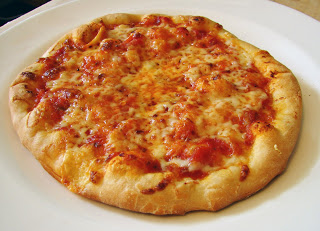
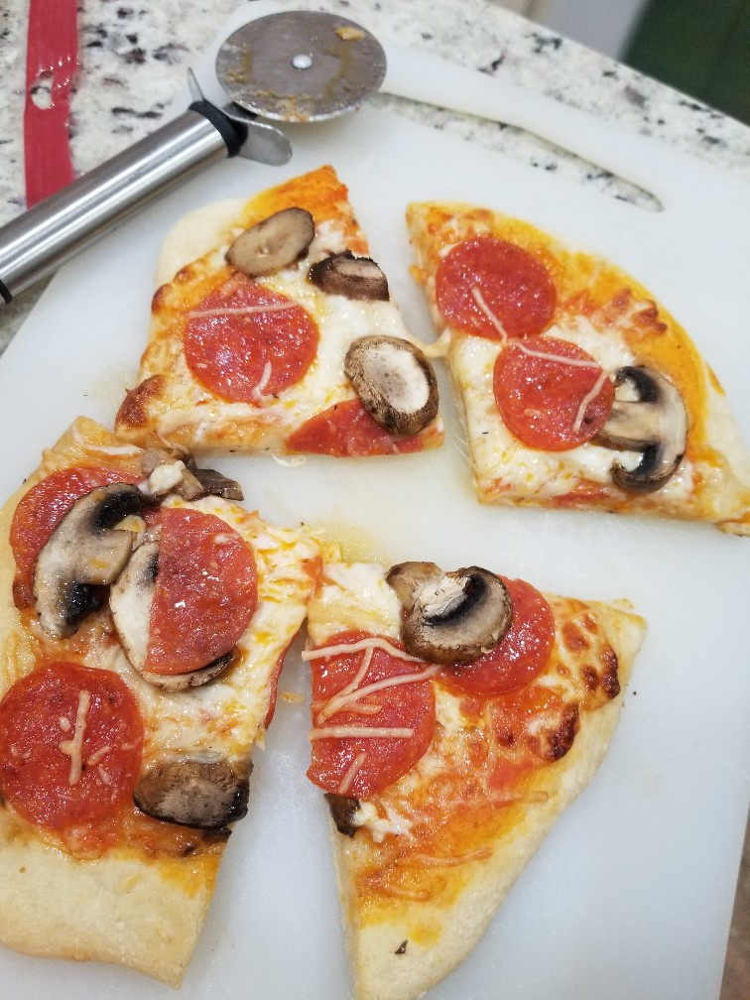

Wolfgang Puck's Pizza Dough
Originally from: Wolfgang Puck via Food Wishes
Makes 4 ~10" pizzas in less than 2 hours.

Ingredients
- 2 1/4 tsp yeast
- 1 teaspoon honey
- 1 cup warm water
- 3 cup all-purpose flour (360 g)
- 1 tsp salt
- 1 tablespoon olive oil
Directions
- Combine all ingredients and knead until smooth and firm.
- Cover dough and let rise 30 - 45 minutes
- Divide into 4 equal pieces and shape into balls, rolling and tucking. Let rest 15 - 20 minutes.
- Flatten balls and shape into desired pizza shape.
- Top with diesired toppings, and bake for 10 - 12 minutes in hot oven ~500°.
Notes
- 2020-07-12 - First time making this dough - happy with result. Used stand mixFirst time making this dough - happy with result. Used stand mFirst time making this dough - happy with result. Used stand mixer to knead, never pulled away from sides since probably not enough dough for size of stand mixer. Kneaded a little more by hand before let rise. Did not roll / toss super thin - came out soft and tender but still plenty of support. Baked two on circular pizza pan with holes, and two on normal baking sheet. Both turned out good and were pretty similar, not sure much of difference between the two, ones on tray maybe slightly more tender but not by much if at all.
